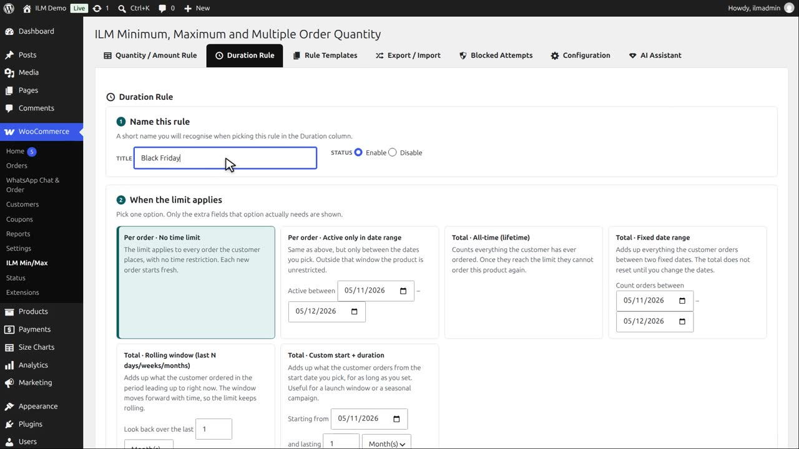
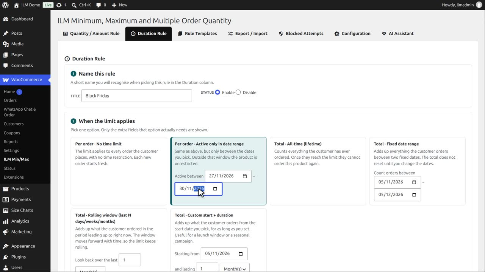
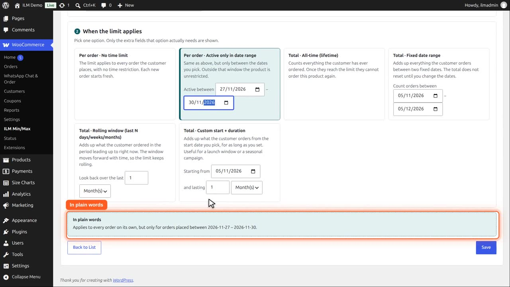
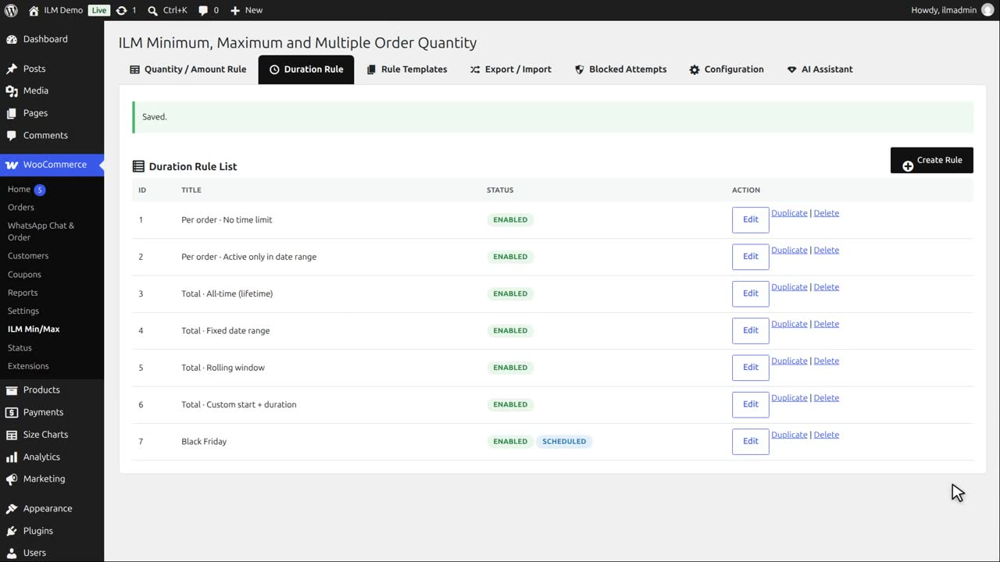
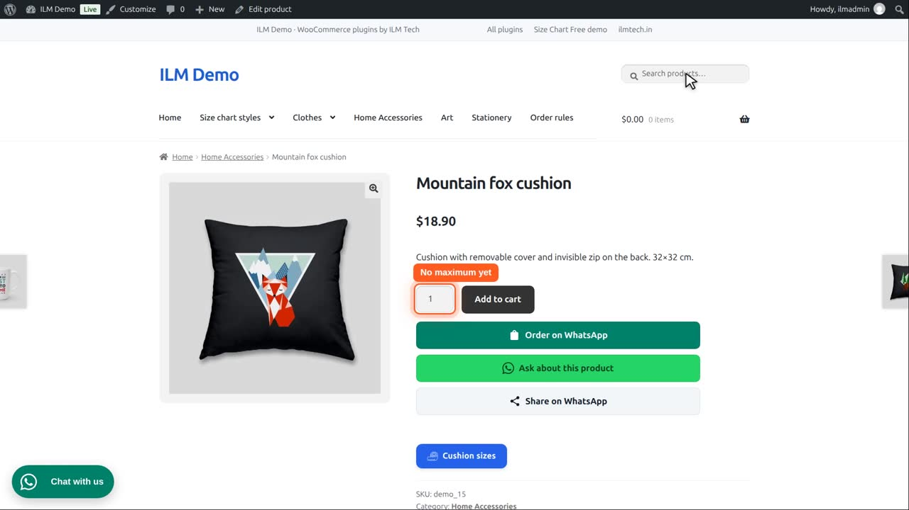

Pro add-on. This feature needs the Pro add-on. See Free and Pro.
| Type | Meaning |
|---|---|
| Per order · Active only in date range | Same as above, but the rule is only active between two fixed dates you pick; outside that window the product is unrestricted. |
On the Duration Rule tab, click Create Rule. Name it, for example Black Friday. It is enabled.

In step two, pick Per order, active only in date range, and choose the dates: November twenty seventh to thirtieth.

In plain words sums the rule up. This type needs no order statuses.

Click Save.

In the rule table, pick Black Friday in the Duration column of the Mountain fox cushion. Its status becomes Scheduled, with the start date.
Before the sale, the maximum of two does not apply at all.

During the dates, it works like a normal per order rule. After the end date, the rule shows Expired, and stops again.